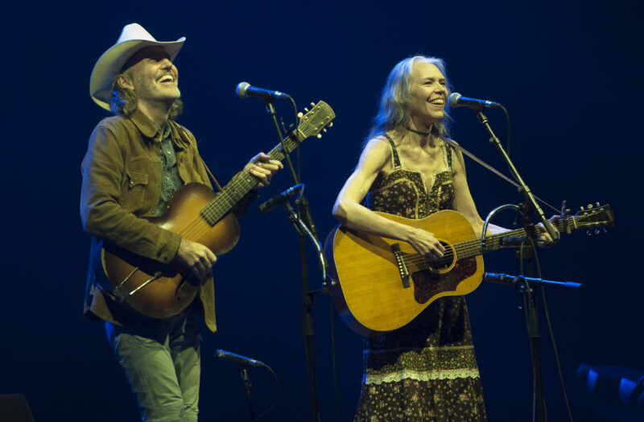

Sun · Oct 18Washington, DC
Gillian Welch & David Rawlings
Nashville-based American singer-songwriter who performs with guitarist David Rawlings, blending Appalachian, bluegrass, country and Americana; their 2020 and 2024 albums each won the Grammy for Best Folk Album. Wikipedia ↗Rawlings is a Grammy-winning guitarist and record producer as well as Welch’s longtime musical partner. David Rawlings on Wikipedia ↗
8 PM · Warner Theatre
“Play Grateful Dead Acoustic Reckoning” · from $63.50.
Event details